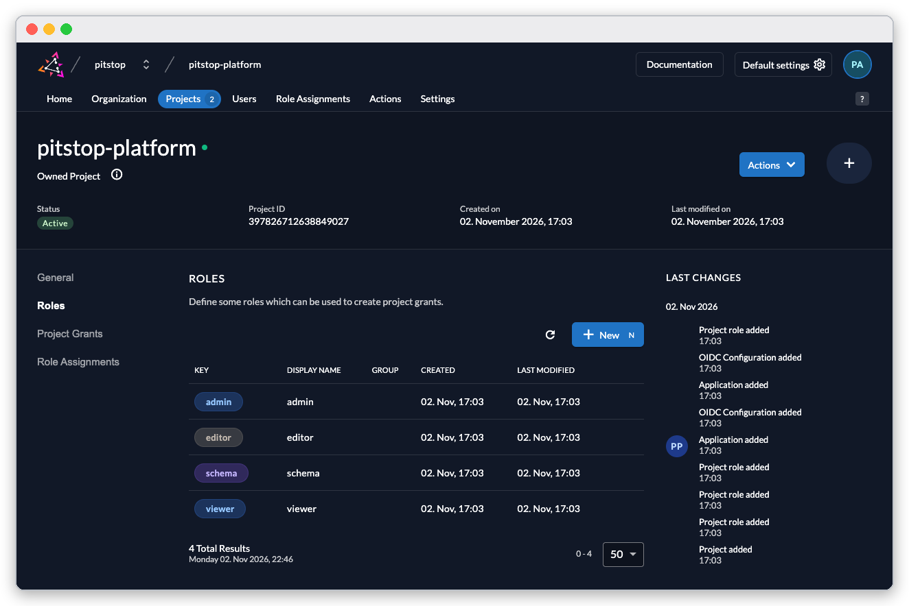
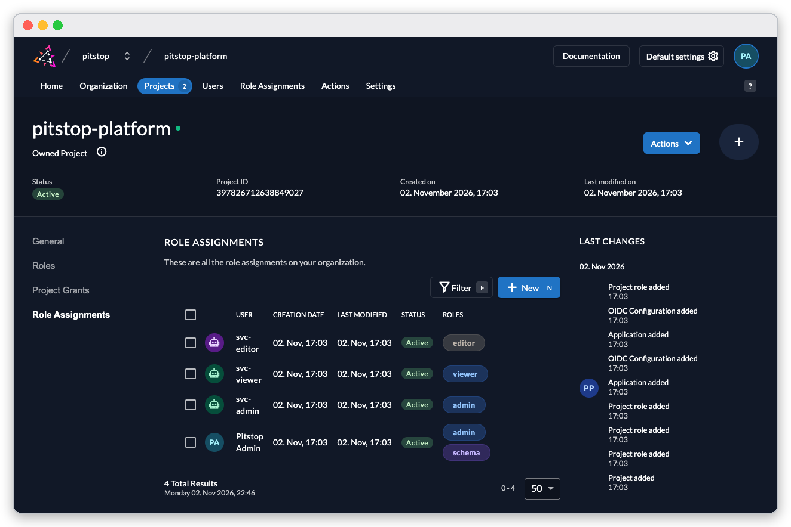

Every call to Minimal is made as one identity, and Core enforces that identity's roles on every table. This guide names the roles an install ships with, who holds them, and what each may do — worked on the CRM dataset.
The project pitstop-platform in the identity console defines four roles:

The four project roles: admin, editor, schema and viewer.
viewer reads the open tables and is refused the rest.editor reads more (the staff tables among them) and may create and change rows where the dataset allows writes.admin reads everything, including the restricted tables.schema is not a data role: it is the right to change database shape through Minimal Studio, and only the first admin holds it (Connect Minimal Studio).
The shipped grants: three demo service users with one role each, and the human admin with admin and schema.
admin@pitstop.auth.<name>): admin and schema.editor, viewer and admin. Their credentials are in the API environment file the installer offers (The REST API); they exist so you can try each role without creating users.Service accounts live under Users → Service Accounts in the console; humans under Users.
Anyone who can reach the sign-in page can register an account — and a registered account has no roles and sees no data. "Core refused this read for your roles" is the permission system working. To grant a role: console → Projects → pitstop-platform → Role Assignments → New.
Every table in a dataset carries an access class — open, working, staff, ledger or restricted — and the class decides who reads and who writes. The installer's Start with. screen describes your dataset's split under Who sees what.
On the CRM dataset:
The quota table is staff-class: an editor reads it (HTTP 200), a viewer is refused:
HTTP 403
insufficient permissions for this operation on this table, got [viewer]
The opportunity table is working-class: an editor's insert succeeds ({"rows_affected": 1}), a viewer's insert is refused with the same 403.
Deleting over the API is refused even for roles that write — a delete on opportunity as the editor answers:
HTTP 403
insufficient permissions for this operation on this table, got [editor]
Read-only is the shipped posture everywhere else: a write to a table whose class does not allow it is a 403, whoever asks. Widening that — like opening a table's rows to MCP — is an explicit, reversible act by an admin, shown step by step in Minimal over MCP.
flowchart LR V[viewer] -->|reads open tables| T[(tables)] E[editor] -->|reads + writes working tables| T A[admin] -->|reads all, restricted included| T S[schema] -->|changes shape via Studio| T
Roles widen from viewer to admin; schema changes the shape, not the rows.
An MCP session's roles come from its token, and on top of the role check every table starts locked for MCP row operations — even an admin token is refused until the table's lock mask and permission template both allow the call. Deployed Custom APIs are the intended path for agents; Minimal over MCP shows both the refusal and the deliberate unlock.